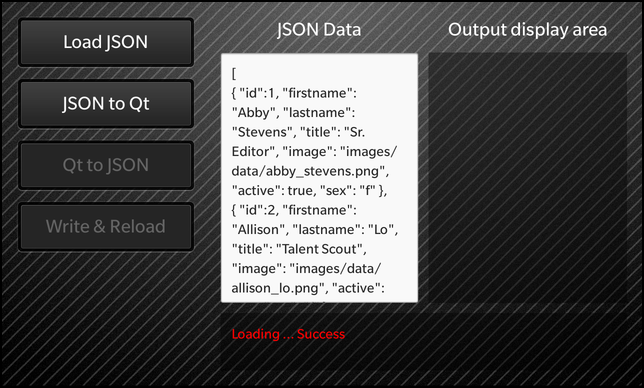

Files:
The JSON Read and Write example shows how to use the JsonDataAccess class from the libbbdata library to convert between JSON formatted data and standard Qt value types.

The topmost (root) JSON element must be either an array or an object. See http://www.json.org/ for the JSON format description.
The JSON element types are mapped to Qt values as follows:
| JSON Type | QT Type |
|---|---|
| null | empty QVariant |
| int | QVariant(Int64) |
| uint | QVariant(UInt64) |
| real | QVariant(double) |
| string | QVariant(const char *) |
| boolean< | QVariant(bool) |
| array | QVariant(QVariantList) |
| object | QVariant(QVariantMap) |
The example progresses through four steps (with four corresponding buttons).
First press the [Load JSON] button to load a small JSON file and display it in its raw form in the left-hand text area. Here is the code:
void App::loadJsonFileRaw(const QString& resultMsg, QFile& jsonFile) { if (!jsonFile.open(QFile::ReadOnly)) { const QString msg = tr("Failed to open JSON file: %1").arg(jsonFile.fileName()); setJsonData (QString()); setResultAndState(msg, Init); return; } const QString doc = QString::fromUtf8(jsonFile.readAll()); setJsonData(doc); setResultAndState(resultMsg + tr("Success"), JsonLoaded); }
Next press the [JSON to Qt] button to convert the JSON data in memory into a tree of Qt value objects and display it (in text form) in the right-hand text area. This is the code:
void App::convertJsonToQt() { const QString result = tr("Converting ... "); setResult(result); setRhsTitleAndText(mRhsDefaultTitle, ""); setQtData (QVariant()); JsonDataAccess jda; QVariant qtData = jda.loadFromBuffer(mJsonData); if (jda.hasError()) { const DataAccessError err = jda.error(); const QString errorMsg = tr("Error converting JSON data: %1").arg(err.errorMessage()); setResultAndState(errorMsg, JsonLoaded); } else { setQtData(qtData); const QtObjectFormatter fmt; setRhsTitleAndText(tr("Qt Data from JSON"), fmt.asString(qtData)); setResultAndState(result + tr("Success"), QtDisplayed); } }
Next press the [Qt to JSON] button to convert the Qt data in memory (from step 2) back into JSON data and display it in the right-hand text area. The data should be identical (except for small irrelevant formatting differences) to the original JSON on the left. This is the code:
void App::convertQtToJson() { const QString result = tr("Converting ... "); setResult(result); setRhsTitleAndText(mRhsDefaultTitle, ""); QString jsonBuffer; JsonDataAccess jda; jda.saveToBuffer(mQtData, &jsonBuffer); if (jda.hasError()) { const DataAccessError err = jda.error(); const QString errorMsg = tr("Error converting Qt data to JSON: %1").arg(err.errorMessage()); setResultAndState(errorMsg, QtDisplayed); } else { setRhsTitleAndText(tr("JSON Data from Qt"), jsonBuffer); setResultAndState(result + tr("Success"), ReadyToWrite); } }
Finally press the [Write & Reload] button to write the Qt data to a file in JSON format and then reload it and displat in the left-hand text area. It should be consistent with the original data. This is the code:
void App::writeToJsonFileAndReload() { const QString result = tr("Writing file ... "); setResult(result); const QDir home = QDir::home(); QTemporaryFile file(home.absoluteFilePath("XXXXXX.json")); if (file.open()) { JsonDataAccess jda(&file); jda.save(mQtData, &file); if (jda.hasError()) { const DataAccessError err = jda.error(); const QString errorMsg = tr("Error writing data to JSON file: %1").arg(err.errorMessage()); setResultAndState(errorMsg, ReadyToWrite); } else { file.close(); loadJsonFileRaw(tr("Reloading new JSON file ... "), file); } } }
Another variation is to manually edit the JSON data in the left-hand list (perhaps to introduce errors) and then observe the error message in the status line after pressing [JSON to Qt].